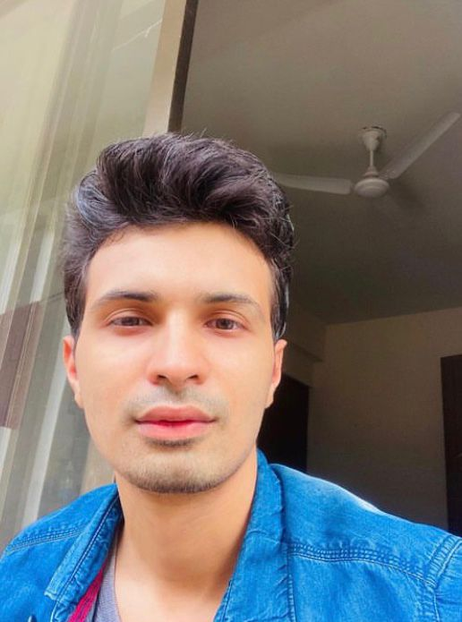

Anubhav Bangari
Contact No: 9013543697
Software Developer Engineer
Profile
A Mechancial Engineer graduate currently working as a Software Developer Engineer (SDE). I have a huge interest in programming langauges & Data Structures & Algorithims.
Currently working on C, C++ & VB6 and learning tools like Tortoise SVN, XML and JSON. I am also pursuing a full stack course at Odin’s School.
Learning skills like Java, MySQL, HTML, CSS, JavaScript and building small projects using these very skills to enhance my experience.
Experience
Extrieve Technologies Pvt. Ltd. - Software Developer Engineer
Almost 10 months of experience of working on C++, VB6 technologies using JSON, XML, Ex-Grid, B-tree, scripts.
- Developed an application which converts a VB Script to JavaScript using VBS Analyser. The VB Script is being parsed using VBS DLL.
- Developed & deployed database tools extracting records from Oracle Berkeley DB using Spider DLL as per required mapping for Idea Kotak.
- Worked on Apache Kafka software in Java using Intellij IDE with Apache Maven dependency for the company. Successfully deployed a consumer client with respect to the Kafka & zookeeper server.
- Developed DB tools which performed CRUD operations on records from the Oracle database & storing it in JSON, XML, B-Tree, CSV format & vice-versa for different file formats. Configuration was done using INI files.
Tata Advanced Systems Ltd – Graduate Engineer Trainee
1 year of experience working in the defense branch of Tata & sons as a GET.
- Worked on development of display software for tracking targets using C++ for surface surveillance radar in HMI environment for the Indian Navy.
Development of small GUI applications for radar tracking.
- Worked on C++ using Asterix framework for transmitting & receiving data between radar systems.
Techncial Skills:
C++ | C | Java | Python | VB6 | DSA | OOPS| JavaScript | HTML | CSS| SQL | Excel
Technologies :
Apache kafka | MS Visual Code | Eclipse| Intellij | MySQL | Git | SVN | Apache Maven| Springboot| Oracle DB
Education :
GB Pant Govt. Engineering College, GGSIPU University 2017 - 2021
B.Tech | CGPA: 8
Laxman Public School, New Delhi
CBSE Board(Class XII), Aggregate: 90% 2015 - 2016
CBSE Board (Class X), CGPA: 10 2013 - 2014
Projects
- Online resume builder Website A convenient website to find build a resume by using the template made in JavaScript & inputting all the necessary information in it.
The website was made using HTML, CSS, and JavaScript on Visual studio code.
- Web development project Creating a simple log in and a sign up page using HTML & CSS
- Tic-Tac-Toe | Link: https://github.com/anubhavbangari/TicTacToe
This allows two users to play against one another with generic rules using C++ in VSCode.
- Work Portfolio
Created a work portfolio, including all projects, career interests & achievements using HTML, CSS & JavaScript.
Academic and Extracurricular Achievements
- Hosted the SAE Seminar event in college in which speakers from Maruti & SAE India were present.
- Solved over 160+ questions on Data Structures & Algorithms on GeeksforGeeks. Link: GeeksforGeeks
- Took part in a technical fest Inceptum and secured runner up position in tech quiz and technical writing.
- Participated in the Formula Imperial 2020l event in which we have to showcase our vehicle design report & business presentation report to the judges virtually. We were ranked 7th all over India.
- Participated in several Job-a- Thons on GeeksforGeeks platform & got certificates for an exemplary performance. Link : drive.google.com/drive/folders
- 6 months of training at Odin School for full stack boot camp. This extensive training included from basics of Java, HTML, CSS, JavaScript, SQL to immediate level with hands-on experience on projects using Eclipse IDE.